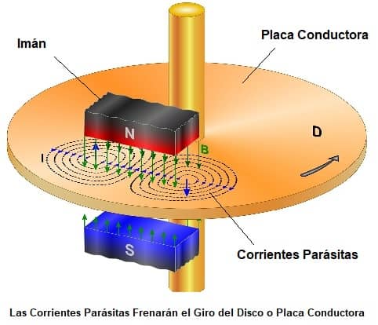
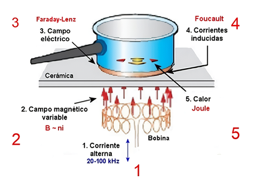

IES Valle del Alberche

📋 ¿En qué consiste la práctica?
Vamos a dejar caer un imán en forma de anillo (o varios imanes apilados) a lo largo de tres barras verticales distintas: una de madera, una de cobre y una de hierro. Aparentemente son tres tubos o barras iguales, y el imán debería comportarse igual en las tres. Pero no ocurre así:
- En la barra de madera, el imán cae rápidamente, como si no hubiera nada.
- En la barra de hierro, el imán se queda pegado a la barra y no cae. La atracción magnética es tan fuerte que supera al peso.
- En la barra de cobre, el imán cae a cámara lenta, como si flotara en un líquido viscoso. ¡Y el cobre no es magnético!
Este sorprendente comportamiento es una manifestación directa de la inducción electromagnética, descubierta por Michael Faraday en 1831. Es una de las demostraciones más elegantes de la física clásica, y también una excelente forma de distinguir entre materiales magnéticos y materiales conductores no magnéticos.
¿Por qué el imán se queda pegado en el hierro y, sin embargo, cae despacio por el cobre si el cobre no atrae imanes?
🎯 ¿Qué vas a aprender?
- Qué es la inducción electromagnética y la ley de Faraday-Lenz.
- Por qué un material no magnético como el cobre puede frenar la caída de un imán.
- La diferencia entre materiales magnéticos (hierro) y conductores no magnéticos (cobre).
- Por qué el imán se queda pegado al hierro: la atracción ferromagnética.
- Qué son las corrientes de Foucault (eddy currents) y cómo se generan.
- Las principales aplicaciones tecnológicas de la inducción magnética: frenos, generadores, transformadores, cocinas de inducción...
- Por qué el fenómeno es un ejemplo perfecto de conservación de la energía.
🔬 Fundamento teórico
La inducción electromagnética es el fenómeno por el cual un campo magnético variable en el tiempo genera una fuerza electromotriz (fem) inducida en un conductor. Es decir: si el flujo magnético que atraviesa un circuito cambia, aparece una corriente eléctrica inducida en él.
Faraday lo demostró experimentalmente en 1831 con una bobina y un imán en movimiento. La ley que describe el fenómeno es la ley de Faraday-Lenz:
donde \( \varepsilon \) es la fem inducida, \( \Phi_B \) es el flujo magnético y el signo negativo indica la oposición al cambio (ley de Lenz).


La energía cinética que pierde el imán se disipa como calor en el cobre, por efecto Joule. Si tocas el tubo después de la experiencia, notarás que se ha calentado ligeramente.
Aquí está la clave que distingue los tres materiales:
- Madera: es un aislante eléctrico y no magnético. No tiene electrones libres para formar corrientes inducidas, ni momentos magnéticos que respondan al imán. El imán cae como si no hubiera nada.
- Cobre: es un excelente conductor eléctrico pero no es magnético (es diamagnético, prácticamente indiferente a los imanes). No atrae al imán cuando está quieto, pero cuando el imán se mueve, se generan corrientes de Foucault que lo frenan.
- Hierro: es un material ferromagnético. Sus átomos tienen momentos magnéticos que se alinean con el campo del imán, generando una fuerte atracción magnética. Esa atracción es tan intensa que el imán se queda pegado a la barra y no cae. El efecto es completamente distinto del frenado por corrientes de Foucault.
📐 Esquemas visuales: las tres barras comparadas
⚙️ Materiales y procedimiento experimental
- Tres tubos o barras cilíndricas del mismo diámetro exterior, si es posible:
- Un tubo o barra de madera (por ejemplo, un mango de escoba o un listón).
- Un tubo de cobre (los de fontanería funcionan muy bien; diámetro 15–22 mm, longitud 50–100 cm).
- Un tubo o barra de hierro o acero (los tubos de acero galvanizado funcionan muy bien).
- Uno o varios imanes de neodimio en forma de anillo, que encajen holgadamente dentro del tubo (o alrededor de la barra).
- Un cronómetro o el móvil para medir tiempos.
- Cinta adhesiva o soportes para mantener las barras verticales.
- Opcional: una cámara de vídeo para grabar la caída y analizarla a cámara lenta.
- Sujeta las tres barras (madera, cobre y hierro) en vertical, paralelas entre sí. Puedes hacerlo con un soporte, con cinta adhesiva o apoyándolas contra una pared.
- Asegúrate de que las tres tienen la misma longitud y están a la misma altura para poder comparar.
- Coloca el imán de anillo en la parte superior de la barra de madera y suéltalo. Cronometra el tiempo de caída.
- Repite con la barra de hierro. Observa cómo el imán se queda pegado a la barra y no cae. Retíralo con cuidado.
- Repite con el tubo de cobre. Suelta el imán y observa cómo cae a cámara lenta.
- Anota los tiempos de caída de madera y cobre, y describe lo que ocurre con el hierro.
[ Imán de anillo ]
↓
[ Tubo vertical ]
↓
[ Base / suelo ]
- Cambiar el espesor del tubo de cobre: un tubo de pared gruesa frena más que uno de pared fina.
- Cambiar la potencia del imán: un imán más potente cae más despacio por el cobre, pero también se pega con más fuerza al hierro.
- Apilar varios imanes: al apilar imanes de anillo, el frenado en el cobre se intensifica y la atracción en el hierro también.
- Probar con tubos de otros metales: aluminio, latón, acero inoxidable. ¿Cuál frena más? ¿Y cuál frena menos? Compara con su conductividad eléctrica y su magnetismo.
- Cortar el tubo de cobre: si le haces una ranura longitudinal, las corrientes de Foucault se interrumpen y el frenado desaparece casi por completo. Es una demostración de la ley de Lenz muy visual.
- Medir la temperatura del tubo: después de varias caídas, el tubo de cobre estará ligeramente más caliente. Es la energía que se ha disipado como calor.
- Grabar con el móvil a cámara lenta: verás cómo el imán cae suavemente por el cobre, sin sacudidas, como si estuviera flotando.
- Comparar con un imán más débil: un imán de ferrita no se pegará tan fuerte al hierro y quizá sí caiga (despacio). Es una forma de ver que la atracción depende de la potencia del imán.
El hierro es un material ferromagnético. Esto significa que sus átomos tienen momentos magnéticos que pueden alinearse fácilmente con un campo magnético externo. Cuando el imán se acerca al hierro, los dominios magnéticos del hierro se orientan en la misma dirección que el campo del imán, creando un campo magnético inducido muy intenso que atrae al imán con fuerza.
Esa fuerza de atracción es mucho mayor que el peso del imán. Por eso el imán no cae: se queda pegado a la barra. Si la barra fuera muy gruesa y el imán muy potente, incluso costaría trabajo despegarlo.
Las corrientes de Foucault también se generan en el hierro cuando el imán se mueve, pero como el imán no se mueve (está pegado), no contribuyen al frenado. La atracción magnética domina completamente.
Para el tubo de cobre, la fuerza de frenado electromagnético se puede aproximar como proporcional a la velocidad:
donde \( k \) es una constante que depende de la geometría del tubo y de la potencia del imán.
Cuando el imán cae a velocidad constante (velocidad límite \( v_{\text{lim}} \)), se cumple:
Esta velocidad límite es la que se observa experimentalmente: el imán cae a velocidad constante, sin acelerar, como si flotara.
🌍 Aplicaciones de la inducción magnética
La inducción electromagnética es uno de los fenómenos físicos con más aplicaciones prácticas en el mundo moderno. Prácticamente toda la electricidad que consumimos se genera gracias a ella. Estas son las aplicaciones más importantes:
⚡ Generadores eléctricos
Los alternadores de las centrales eléctricas (hidroeléctricas, térmicas, nucleares, eólicas) convierten energía mecánica en eléctrica haciendo girar una bobina dentro de un campo magnético. Es la aplicación más importante: toda la red eléctrica depende de ella. Los dinamos de las bicicletas funcionan igual.
🔌 Transformadores
Los transformadores permiten cambiar el voltaje de la corriente alterna. Son esenciales para transportar la electricidad a largas distancias (alta tensión) y para reducirla a niveles seguros en casa (220 V). Sin ellos, la red eléctrica moderna no existiría.
🚄 Frenos electromagnéticos
Los trenes de alta velocidad (como el TGV o el AVE) y algunas atracciones usan frenos de corrientes de Foucault: no hay contacto, no hay desgaste, y el frenado es suave y progresivo. También se usan en camiones pesados y en bicicletas de spinning (freno magnético).

🍳 Cocinas de inducción
Las cocinas de inducción generan un campo magnético variable que induce corrientes en el fondo metálico de la olla. Esas corrientes calientan la olla directamente, sin calentar la superficie de la cocina. Es una aplicación doméstica de las corrientes de Foucault.

🔍 Detectores de metales
Los detectores de metales de aeropuertos, playas y arqueología usan una bobina emisora y otra receptora. Cuando un objeto metálico se acerca, cambia el flujo magnético y se induce una corriente que el aparato detecta.
📱 Carga inalámbrica
Los cargadores inalámbricos de móviles y cepillos eléctricos usan inducción magnética: una bobina en el cargador genera un campo variable que induce corriente en una bobina del dispositivo. Sin cables, sin contactos.
Otras aplicaciones importantes:
- Altavoces y micrófonos: convierten señales eléctricas en sonido (y viceversa) usando una bobina móvil dentro de un campo magnético.
- Lectores de tarjetas y discos duros: leen la información magnética inducida por el movimiento del soporte.
- Frenos de las montañas rusas: sistemas de frenado magnético sin contacto para detener los vagones con suavidad.
- Medidores de caudal: miden el flujo de líquidos conductores sin partes móviles.
- Amortiguadores magnéticos: en algunos sistemas de suspensión y en instrumentos de precisión.
- Calentamiento por inducción en la industria: para fundir metales o soldar sin llama.
- Motores eléctricos: aunque funcionan por fuerzas magnéticas, también están relacionados con el principio inverso de la inducción.
- Tarjetas RFID y NFC: se alimentan por inducción del lector.
- Bombas de sangre artificiales: algunos dispositivos médicos usan inducción para mover la sangre sin contacto mecánico.
📊 ¿Qué has demostrado?
Los materiales responden de formas muy distintas a un imán en movimiento.
La madera (aislante y no magnética) deja caer el imán sin más. El hierro (ferromagnético) lo atrae con tanta fuerza que se queda pegado. El cobre (conductor no magnético) genera corrientes de Foucault que frenan la caída hasta hacerla "a cámara lenta".
Además, has comprobado que:
- En la madera, el imán cae rápido porque no hay ni atracción ni corrientes inducidas.
- En el hierro, el imán se queda pegado por atracción ferromagnética. La fuerza magnética supera al peso.
- En el cobre, el frenado es puramente electromagnético: no hay atracción, solo oposición al movimiento.
- La energía cinética del imán se disipa como calor en el cobre (efecto Joule).
- La ley de Lenz es una consecuencia de la conservación de la energía.
- La inducción magnética tiene aplicaciones revolucionarias: generadores, transformadores, frenos, cocinas, carga inalámbrica...
🧪 DESMITIFICANDO la inducción magnética en una barra Pulsame
Enunciado: Una espira circular de área \( A = 0{,}010\ \mathrm{m^2} \) está situada perpendicularmente a un campo magnético uniforme. El campo varía de \( 0{,}20\ \mathrm{T} \) a \( 0{,}80\ \mathrm{T} \) en \( 0{,}50\ \mathrm{s} \). Calcula la fem inducida en la espira.
Enunciado: Explica, en términos de la ley de Faraday, por qué el imán cae tan rápido por la barra de madera como si no hubiera nada.
Enunciado: Explica por qué el imán se queda pegado a la barra de hierro mientras que en la barra de cobre cae (aunque sea despacio). ¿Qué diferencia fundamental hay entre el hierro y el cobre?
- En el hierro, la atracción magnética es tan fuerte que supera al peso del imán. El imán se queda pegado.
- En el cobre, no hay atracción. Solo aparece el frenado por corrientes de Foucault cuando el imán se mueve. Como el frenado no supera al peso, el imán sigue cayendo, pero despacio.
Enunciado: Un imán de masa \( m = 20\ \mathrm{g} \) cae por un tubo de cobre y alcanza una velocidad límite constante de \( v = 0{,}15\ \mathrm{m/s} \). Sabiendo que la fuerza de frenado es \( F = k \cdot v \), calcula la constante \( k \). Dato: \( g = 9{,}8\ \mathrm{m/s^2} \).
Enunciado: Se prueba el mismo imán en tres tubos: cobre, aluminio y acero inoxidable. Sabiendo que las conductividades eléctricas son aproximadamente \( \sigma_{\text{Cu}} = 5{,}96 \times 10^7\ \mathrm{S/m} \), \( \sigma_{\text{Al}} = 3{,}77 \times 10^7\ \mathrm{S/m} \) y \( \sigma_{\text{acero}} = 1{,}45 \times 10^6\ \mathrm{S/m} \), predice en qué tubo caerá el imán más despacio y en cuál más rápido.
- Cobre: \( 5{,}96 \times 10^7\ \mathrm{S/m} \) → el mejor conductor → el más lento.
- Aluminio: \( 3{,}77 \times 10^7\ \mathrm{S/m} \) → buen conductor → también frena, pero menos que el cobre.
- Acero inoxidable: \( 1{,}45 \times 10^6\ \mathrm{S/m} \) → conductor mediocre → apenas frena (y además puede tener algo de ferromagnetismo).
Enunciado: Si cortamos el tubo de cobre longitudinalmente y hacemos una ranura a lo largo de toda su longitud, el frenado desaparece casi por completo. Explica por qué.
Enunciado: Los trenes de alta velocidad usan frenos de corrientes de Foucault. Explica cómo funcionan y qué ventajas tienen frente a los frenos mecánicos tradicionales.
- Sin contacto: no hay desgaste de pastillas ni discos de freno.
- Suave y progresivo: el frenado es gradual, no brusco.
- Menos mantenimiento: al no haber partes móviles que se desgasten, los costes de mantenimiento bajan.
- Silencioso: no produce el chirrido típico de los frenos mecánicos.
- Recuperación de energía: en algunos sistemas, la energía se puede recuperar como electricidad.
Enunciado: Explica cómo una cocina de inducción calienta la comida sin calentar la superficie de la cocina. ¿Por qué no funciona con una olla de vidrio o de cerámica?
Tres barras, un imán: pegado, rápido y a cámara lenta. La mejor manera de ver la ley de Faraday-Lenz en acción.
(Los detalles sobre lo que entra en las pruebas escritas se publicarán periódicamente en M.Teams).